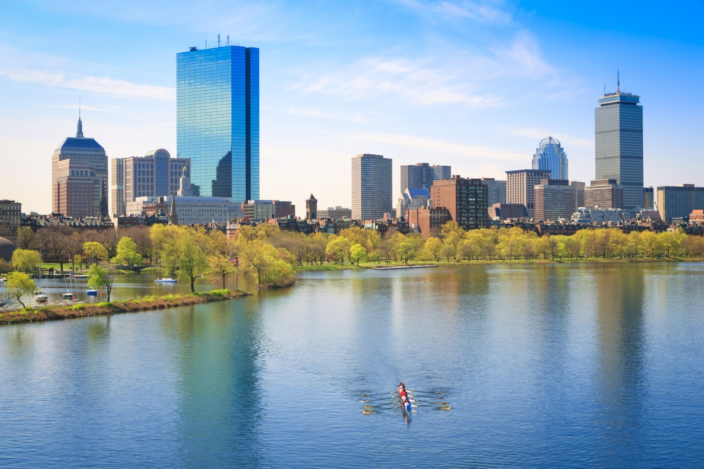

Nutrients
Nitrogen & Phosphorus
Nutrients (N & P)
- SourcesLawn fertilizers, pet waste
- ImpactHarmful algal blooms, oxygen depletion
- PatternsPeaks in spring and summer
- MeasurementOften exceeds EPA standards by 200%
Heavy Metals
Zinc, Copper, Lead
Heavy Metals
- SourcesBrake dust, tire wear, industry
- Common metalsZinc, copper, lead, cadmium
- ImpactBioaccumulation in fish and wildlife
- HotspotsNear highways and industrial zones
Road Salt
Deicing Chemicals
Road Salt & Deicers
- SourcesWinter road maintenance
- ImpactChloride spikes during thaws
- ConcernSalt accumulation in groundwater
- LevelsUp to 350% above aquatic life limits
Petroleum
Oil & Gas Products
Petroleum Hydrocarbons
- SourcesOil leaks, spills, vehicle emissions
- ImpactToxic to aquatic life
- ConcentrationsHighest during "first flush" rains
- DetectionVisible rainbow sheen on water
Microplastics
Synthetic Particles
Microplastics
- SourcesTire wear, synthetic clothing, litter
- ImpactIngestion by aquatic organisms
- ResearchEmerging area of study
- Findings13.3 particles per liter in urban areas
The Charles River is a Boston icon. However, it suffers from poor water quality issues which impact not only the native wildlife, but the Bostonians who frequent it. Despite this, the water quality is making steady improvements thanks to environmental protection efforts by Boston and surrounding cities.
Though it can be seen in the numbers that the water quality has gotten noticeably better over the years, few people have first-hand experience being on the river like the rowers that find a practice place on the Charles. Kane Larin, the Director of Operations at Community Rowing Inc. based in Brighton, MA, has been rowing regularly on the Charles since 1991.
From Boston Magazine
"I've seen a lot of change," said Larin. "When I started rowing on the river, they still hadn't built Deer Island, the sewage treatment plant." The Deer Island Wastewater Treatment Plant was created in 1968, and operations of the plant were taken over by the Massachusetts Water Resources Authority (MWRA) in 1985. Deer Island was created to help remove pollutants from wastewater that ends up in the Charles due to combined sewage overflow (CRO) from the 43 communities in Greater Boston.
The island (which is not actually an island, but is nicknamed as one), has seen major additions and updates throughout the years. This includes the construction of a primary treatment plant in 1991, and creation of a secondary treatment plant in 1997.
Deer Island is still functional today and plays a key role in helping keep the Charles River free of sewage pollutants. Before the plant was functioning to the standard it does now, there were visible effects in the Charles from CRO after a rainstorm. "When there was heavy rain, you could see the sort of untreated or lightly treated water just sort of like bubbling up, particularly at the cottage farm outfall, which is down by the BU bridge," Larin said. "You used to row over it and there would be this sort of this big brown swirl of water. It really gross. It's gotten much, much cleaner," he added.
There are still health concerns, despite the progress that has been made. "For people that have been on the river a bunch, it's also fairly predictable when there's going to be an issue, you can tell by how much rain we've had," said Larin. "Right after a big rain storm, there tends to be overflows. The water is less safe for a couple days after that." It is recommended that people use a little more caution when going out on the Charles to row in those situations.
"It's really about it's sort of building good hygiene practices, like when people come in [to Community Rowing Inc.] making sure that they wash their hands," Larin said. He also mentioned being conscientious of water splashing onto people and water bottles when they are in the boats. Making sure personal water bottles are cleaned before drinking from them is recommended.
Larin said "In general, it isn't that people get sick while they're still out there. It's sort of like it and after effect, more like food poisoning, It comes and gets you later." The effects of pollution and potential sickness are taken into consideration by Larin and other members of CRI, but the river quality does not effect the rowing gear that is used.
The efforts made by have made a difference in Charles, but this does not mean the problem is solved. While it is cleaner, there needs to be maintenance to keep these standards up with the times. CRI uses the Charles River Watershed Association's (CRWA) water quality report and prediction tool to help navigate potentially dangerous water at times.
There is still work to be done when it comes to cleaning and maintaining good water quality of the Charles River. "I think it's going to take a commitment from all water users," said Larin. "I'm hopeful that the people will see the benefit of making the river cleaner and healthier, and I think that it isn't just people that go on the river that will benefit."
The Charles River has a long history lined with pollution and efforts to clean it up. Now the EPA is working towards solutions for keeping the river safe to swim, fish, and boat on for most of the year.
The Charles River story starts in the 1800s, when architect Charles Eliot developed the plan imagining the river as a public area lined with parks. For this to work the river banks previously owned by the City of Cambridge and Boston Metropolitan Park Commission were transferred to public domain. Then in the 1900s a dam was put in place to help aid the smell from all the sewage going into the river and the Esplanade was created.
By the middle of the 1960s the Charles River Watershed Association, the Environmental Protection Agency, the Massachusetts Water Resources Authority, the Massachusetts Department of Environmental Protection and the Boston and the multiple municipalities surrounding the river worked together to improve the water quality of the river and cease major industrial activities.
In 1995 the Environmental Protection Agency created the Clean Charles River Initiative, which has made different activities in the river a reality over the last thirty years. In an interview with Todd Borci, the head of the EPA's Charles River Enforcement, he said the river has "great water quality compared to how it used to be," and said "it really is swimmable."
There's a lot of stigma surrounding the water quality of the river, Borci explained, however the Charles is now open for varying activities such as swimming and boating for most of the year. Anyone can apply for a permit to any of these activities in the river through the DCR, however there are also events created by organizations such as the annual City Splash, which allows for certain areas in the Charles to be open for swimming.
The future of the Charles River is bright as the EPA and the Charles River Watershed Association alongside the citizens of the Commonwealth continue to work towards a cleaner and safer river for all.
Other cities that the Charles River flows through are also doing their part to reduce pollution in the Charles. One such city is Newton, Massachutes. This past February they broke ground on a new water filtration project which at its completion will help filter pollutants from the Cheesecake Brooke, a tributary of the Charles River, as well as mitigate flood concerns.
Impermeable surface runoff is one of the main concerns to the health of the Charles River. The Boston metroplex is largely urbanized and contains a large amount of paved surfaces, which unlike organic surfaces, lack the natural filtration to absorb harmful chemicals and particles from runoff caused by rain and snowmelt. This water then runs unfiltered into the Charles river and with it brings the pollutants.
One of the most harmful of these pollutants is phosphorus. This chemical is commonly found in fertilizers and animal manure. When it flows into the river from runoff it leads to an over abundance. The large amounts of phosphorus causes harmful algal blooms which threaten the health of people and animals that come into contact with it.
The Cheesecake project involves installing an underground water storage and filtration facility to collect 100% of stormwater runoff from a neighborhood adjacent to the brook. The facility will contain almost 50,000 cubic feet of water from large storms, where it will be stored and slowly filtered through the ground and back into the brook.

From Charles River Watershed Association
This project was a collaboration between the Newton Department of Parks, Recreation, and Culture (PRC), Newton's Department of Public Works (DPW), and the Charles River Watershed Association (CRWA). The Newton Department of Public works pursued this project to meet pollution mitigation goals set by the city, Eric Highers, an environmental engineer working for the Newton Department of public works, explained.
Both flooding that harms Newton Residents as well as phosphorus pollution that impacts the Charles River are both problems stemming from current conditions of the Cheesecake Brook. "Newton has one of the largest phosphorus export loads throughout the Charles River Watershed," said Highers.
The new storage and filtration system will help mitigate both of these problems. "The Crafts St Infiltration Basin that is going in as part of this grant project is designed to retain upstream runoff and infiltrate up to the 25-year storm event," Highers stated, "this is a considerable volume that when removed will help keep water levels down in Cheesecake Brook and mitigate the excessive nutrient concentrations associated with that volume."
Beyond the water filtration system, the PRC, DPW, and CRWA plan to plant native flora along the banks of the brook, creating a bioswale, another common runoff filtration tactic.

From Gardenbite
Aside from large projects such as this, citizens can also make an impact by implementing their own stormwater control measures. Highers encouraged this practice stating "the City [Newton] heavily encourages residents to implement stormwater control measures on their property that mitigate runoff to street drains." Popular methods of stormwater control measures are rain gardens, rain barrels, and subsurface infiltration systems. "However, the However, the City stresses that any resident interested in pursuing these measures on their property to contract a private engineer to ensure that the system is sized appropriately for their property and will not overflow, back up, or cause issues for their abutters."
In the future the city of Newton is "working tirelessly to investigate the feasibility of implementing these stormwater control measures throughout the City and mitigate its pollutant export load to the Charles River" emphasised Highers. However, due to factors such as soil conditions, infrastructure constraints, or groundwater elevations, these measures are not always possible. Regardless of this there is still much opportunity for creating a clean and resilient Charles River.